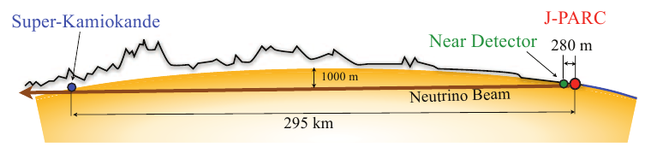

T2K : Tokai to Kamiokande
T2K est l’acronyme de Tokai to Kamioka. Tokai et Kamioka sont deux régions du Japon. T2K est une expérience de neutrinos qui étudie l’oscillation des neutrinos depuis sa mise en place en 2010.
Comme nous l’avons vu, les neutrinos sont de trois types (saveurs) et ils oscillent entre les trois. T2K se focalise sur le passage des neutrinos muoniques aux neutrinos électroniques. L’expérience a annoncé les premières indications expérimentales en juin 2011. Ces oscillations n'avaient jamais été observées par aucune des expérience antérieure. T2K effectue également des mesures des oscillations des neutrinos muoniques aux neutrinos tau (qui ont été observées par des expériences précédentes).


Le faisceau intense de neutrinos muoniques de T2K est produit dans l'installation appelé J-PARC (Japan Proton Accelerator Research Complex) à Tokaimura, sur la côte Est du Japon. Le faisceau est dirigé vers le détecteur lointain Super-Kamiokande situé à 295 km dans la ville de Hida, préfecture de Gifu. Les propriétés et la composition du flux de neutrinos sont d'abord mesurées par un système de détecteurs proches situés à 280 m du lieu de production des faisceaux sur le site J-PARC, puis à nouveau dans le détecteur Super-Kamiokande. La comparaison du contenu des différentes saveurs de neutrinos dans ces deux emplacements permet de mesurer la probabilité d'oscillations sur le trajet entre les détecteurs proches et éloignés. Super-Kamiokande est capable de détecter les interactions des neutrinos muons et électroniques, et ainsi mesurer la disparition du flux de neutrinos muoniques, ainsi que l'apparition des neutrinos électroniques dans le faisceau.
Le modèle (le modèle standard de la physique des particules) utilisé pour étudier la physique des particules est une théorie qui fonctionne très (trop ?) bien. Aujourd’hui les physicien savent que ce modèle est incomplet. La découverte des oscillations des neutrinos a en effet prouvé que les neutrinos ne sont pas sans masse, ce qui est un hypothèse du modèle standard.
De plus, ce modèle est incapable de fournir une explication de l’asymétrie matière/antimatière dans l’univers. Un théorie dit que cette asymétrie pourrait être due à la violation d’une symétrie physique à la naissance de l’univers. T2K cherche aussi a prouver cette violation de symétrie car les oscillations de neutrinos n’excluent pas cette possibilité.